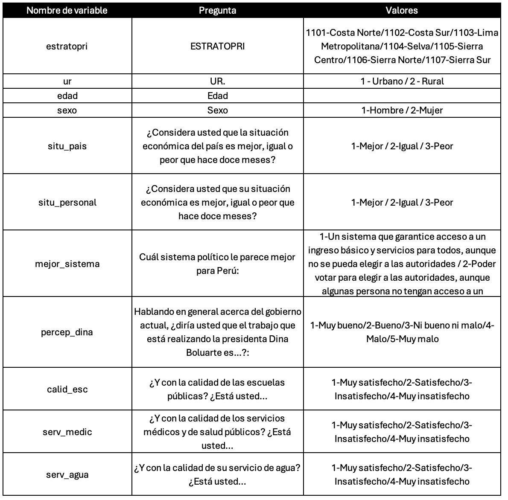
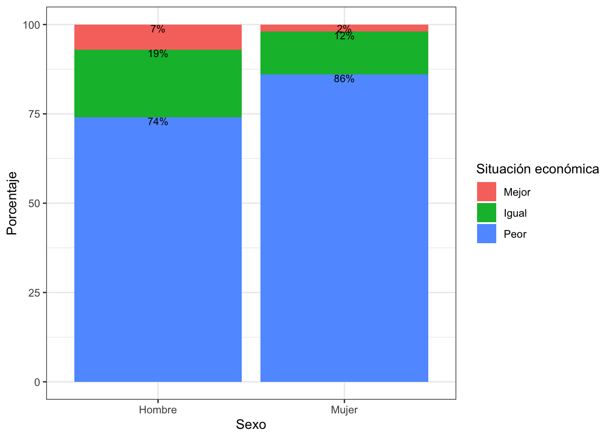
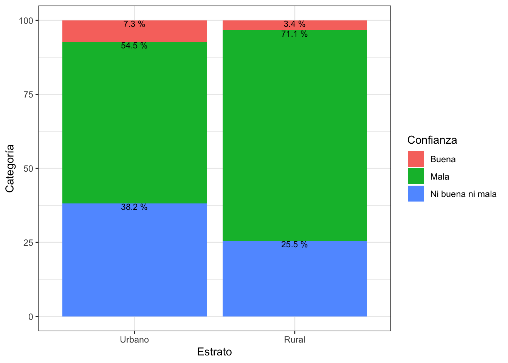

Práctica dirigida 8

FACULTAD DE CIENCIAS SOCIALES - PUCP
Curso: POL 278 - Estadística para el análisis político 1 | Semestre
2024 - 1
Tablas de contingencia y prueba Chi2
Tablas de contingencia
- Son tablas de doble entrada, en las cuales se cruzan las categorías de dos variables de interés.
- En las casillas de la tabla se ubica la frecuencia o el número de casos de cada cruce.
- Conceptos importantes: Frecuencias observadas y frecuencias esperadas.

Frecuencias observadas y esperadas
Frecuencia esperada: Estas son las frecuencisa que deberían darse si las variables fueran independientes.
Frecuencia observada: Estas son las frecuencias reales que se observa en nuestra data.
Ejemplo:

Prueba Chi2
Chi2 es una prueba para estimar el grado de asociación entre variables categóricas: “Nominal - Nominal”, “Nominal - Ordinal” y “Ordinal - Ordinal”. Esto significa que una parte de la variabilidad de una variable puede ser explicada por otra variable.
Supuestos:
Para analizar asociación se requiere que el número de observaciones esperadas en cada celda de la tabla de contingencia debe ser suficientemente grande.
Para fines de este curso, al menos cada celda de la TC de frecuencias esperadas debe ser de 5.
Ten en cuenta que si estas condiciones no se cumplen, entonces la prueba podría no funcionar adecuadamente y los resultados de la prueba podrían no ser válidos. Si es que encuentran que no se cumple este supuesto: Repórtalo!
Hipótesis:
Hipótesis nula (H0): Las variables son estadísticamente independientes (No hay asociación).
Hipótesis alternativa (H1): Las variables son estadísticamente dependientes (Sí hay asociación).
Pregunta de investigación
¿Cuál es la percepci√≥n de la situaci√≥n del pa√≠s a partir de variables socioecon√≥micas ? ü§î
Para poder responder a la anterior pregunta se usará la base de datos del Latin American Public Opinion Project (LAPOP1) 2023. Este es un estudio de la Universidad de Vanderbilt que realiza encuestas de opinión pública en 34 países de América, incluyendo Norte, Centro, Sur y el Caribe. LAPOP mide actitudes, evaluaciones y experiencias en diversos temas, proporcionando datos comparativos de alta calidad sobre la democracia, la gobernabilidad y el desarrollo social en la región.
Cargamos la data:
library(rio)
library(dplyr)
lapop=import("peru2023.sav")
str(lapop)## 'data.frame': 685 obs. of 11 variables:
## $ estratopri : num 1103 1103 1103 1103 1103 ...
## ..- attr(*, "format.spss")= chr "F8.2"
## $ ur : num 1 1 1 1 1 1 1 1 1 1 ...
## ..- attr(*, "format.spss")= chr "F8.2"
## $ edad : num 26 44 68 27 53 43 43 29 57 35 ...
## ..- attr(*, "format.spss")= chr "F8.2"
## $ sexo : num 2 2 1 1 1 1 2 2 2 1 ...
## ..- attr(*, "format.spss")= chr "F8.2"
## $ situ_pais : num 3 3 2 1 3 3 3 3 3 3 ...
## ..- attr(*, "format.spss")= chr "F8.2"
## $ situ_personal: num 2 2 3 2 3 3 2 2 3 3 ...
## ..- attr(*, "format.spss")= chr "F8.2"
## $ mejor_sistema: num 1 1 2 1 1 2 1 1 2 1 ...
## ..- attr(*, "format.spss")= chr "F8.2"
## $ percep_dina : num 3 2 3 4 3 3 4 3 3 3 ...
## ..- attr(*, "format.spss")= chr "F8.2"
## $ calid_esc : num 3 2 3 3 2 4 2 2 2 2 ...
## ..- attr(*, "format.spss")= chr "F8.2"
## $ serv_medic : num 3 2 3 3 2 4 2 3 2 2 ...
## ..- attr(*, "format.spss")= chr "F8.2"
## $ serv_agua : num 2 2 2 2 4 2 2 3 2 3 ...
## ..- attr(*, "format.spss")= chr "F8.2"Diccionario de datos

üîµ ¿Existe diferencia sobre la percepci√≥n econ√≥mica actual entre hombres y mujeres?
- Pregunta en cuestionario LAPOP: ¿Considera usted que la situación económica del país es mejor, igual o peor que hace doce meses?
- Situación económica: 1 (Mejor), 2 (Igual), 3 (Peor)
PASO 0: Revisamos la estructura de las variables que nos interesan:
lapop <- lapop %>%
mutate(situ_pais = factor(situ_pais, levels = 1:3, labels = c("Mejor", "Igual", "Peor")))
str(lapop$situ_pais) #verificamos## Factor w/ 3 levels "Mejor","Igual",..: 3 3 2 1 3 3 3 3 3 3 ...A nivel general, ¿qué percibe la mayoría sobre la situación económica del país?
resultados = lapop %>%
count(situ_pais) %>%
mutate(percentage = n / sum(n) * 100)
resultados## situ_pais n percentage
## 1 Mejor 31 4.525547
## 2 Igual 108 15.766423
## 3 Peor 546 79.708029Variable sexo: nominal 1 - Hombre 2 - Mujer
str(lapop$sexo)
table(lapop$sexo)Les damos el formato adecuado:
lapop$sexo = factor(lapop$sexo, levels = 1:2, labels = c("Hombre","Mujer"))
table(lapop$sexo)##
## Hombre Mujer
## 360 325PASO 1: Tabla de contingencia
Los valores observados son los valores de nuestra tabla tal como la tenemos en nuestra base.
tabla1=table(lapop$situ_pais, lapop$sexo) #tabla simple
tabla1##
## Hombre Mujer
## Mejor 24 7
## Igual 69 39
## Peor 267 279Creamos porcentajes por columna, para ello tenemos que agregar prop.table al comando anterior. El argumento de prop.table puede ser 1: para calcular porcentaje por fil, o 2: para calcular por columna ⚠️
tablapor1 = tabla1 %>%
prop.table(2) %>%
round(2) #redondear el resultado a 2 decimales
tablapor1##
## Hombre Mujer
## Mejor 0.07 0.02
## Igual 0.19 0.12
## Peor 0.74 0.86¿Existe diferencia con lo que vemos a nivel de cada subgrupo (hombre y mujer) respecto a lo que habíamos visto a nivel de toda la muestra?
PASO 2: Diagrama de barras apiladas
Preparamos la data para graficar: 1. Necesitamos que sea un data frame
toPlot1 = as.data.frame(tablapor1)
names(toPlot1) = c("Categoria", "Sexo", "Porcentaje")
toPlot1## Categoria Sexo Porcentaje
## 1 Mejor Hombre 0.07
## 2 Igual Hombre 0.19
## 3 Peor Hombre 0.74
## 4 Mejor Mujer 0.02
## 5 Igual Mujer 0.12
## 6 Peor Mujer 0.86Generamos el gráfico y lo solicitamos:
library(ggplot2)
toPlot1 %>%
ggplot()+
aes(x=Sexo, y=Porcentaje*100, fill=Categoria) +
geom_bar(position="stack", stat="identity")+ #Stack indica que son barras apiladas
geom_text(aes(label=paste0(Porcentaje*100,"%")),
position = position_stack(),
vjust=1, size = 3)+
labs(x="Sexo", y="Porcentaje", fill="Situación económica")+
theme_bw()
De forma preliminar, ves diferencias entre la forma cómo se distribuye la variable “Situación Económica” en cada subgrupo (hombre y mujer)?
PASO 3: Prueba Chi cuadrado
H0: El sexo es estadísticamente independiente de la situación económica respecto del año pasado
HA: El sexo es estadísticamente dependiente de la situación económica respecto del año pasado
Para hacer el test ingresamos la tabla de frecuencias
chisq.test(tabla1)##
## Pearson's Chi-squared test
##
## data: tabla1
## X-squared = 16.174, df = 2, p-value = 0.0003076De acuerdo al p–value obtenido en la prueba de hipótesis de Chi2, al ser menor de 0.05, podemos rechazar la hipótesis nula (Las variables son independientes).
Por lo tanto, concluimos existe dependencia entre las variables escogidas: sexo y situación económica actual. Esto quiere decir que el ser hombre o mujer sí se refleja en la percepción de la situación económica del país.
SUPUESTO
Ten en cuenta que si te piden verificar el supuesto sólo tienes que solicitar la tabla de frecuencias esperadas y ver que efectivamente todas las celdas tienen un número igual o mayor a 5.
chisq.test(tabla1)$expected##
## Hombre Mujer
## Mejor 16.29197 14.70803
## Igual 56.75912 51.24088
## Peor 286.94891 259.05109En este caso s√≠ cumple el supuesto! üòé
üøExiste relaci√≥n entre zona de vivienda y la percepci√≥n de la gesti√≥n de Boluarte?
PASO 0: Revisamos la estructura de las variables que nos interesan:
- Variable percep_dina: 1 (Muy bueno), 2 (Bueno), 3 (Ni bueno, ni malo), 4 (Malo), 5 (Muy malo).
Para este ejercicio creemos solo tres grupos “Buena” (1/Muy bueno y 2/Bueno), “Ni buena ni mala” (3/Ni bueno ni malo) y “Mala” (4/Malo, 5/Muy malo)
str(lapop$percep_dina)lapop = lapop %>%
mutate(percep_dina2=case_when(percep_dina<=2 ~ "Buena",
percep_dina==3 ~ "Ni buena ni mala",
T ~ "Mala"))
lapop$percep_dina2 = as.factor(lapop$percep_dina2)Estrato: 1-Urbano 2-Rural
lapop$ur = factor(lapop$ur,
levels = c(1:2),
labels = c("Urbano","Rural"))
table(lapop$ur)##
## Urbano Rural
## 536 149PASO 1: Tabla de contingencia
Los valores observados son los valores de nuestra tabla tal como la tenemos en nuestra base
tabla2 = table(lapop$percep_dina2, lapop$ur)
tabla2##
## Urbano Rural
## Buena 39 5
## Mala 292 106
## Ni buena ni mala 205 38Creamos porcentajes por columna:
tablapor2 = tabla2 %>%
prop.table(2) %>% # porcentaje por columna
round(3)
tablapor2##
## Urbano Rural
## Buena 0.073 0.034
## Mala 0.545 0.711
## Ni buena ni mala 0.382 0.255Creamos porcentajes por fila:
PASO 2: Diagrama de barras apiladas
Preparamos la data para graficar:
toPlot2 = as.data.frame(tablapor2)
names(toPlot2) = c("Categoria", "Estrato", "Porcentaje")
toPlot2## Categoria Estrato Porcentaje
## 1 Buena Urbano 0.073
## 2 Mala Urbano 0.545
## 3 Ni buena ni mala Urbano 0.382
## 4 Buena Rural 0.034
## 5 Mala Rural 0.711
## 6 Ni buena ni mala Rural 0.255Generamos el gráfico y lo solicitamos:
toPlot2 |>
ggplot()+
aes(x=Estrato, y=Porcentaje*100, fill=Categoria) +
geom_bar(position="stack", stat="identity")+
geom_text(aes(label=paste(Porcentaje*100,"%")),
position = position_stack(),
vjust=1, size = 3)+
labs(x="Estrato", y="Categoría", fill="Confianza")+
theme_bw()
PASO 3: Prueba Chi cuadrado
H0: La percepción de la gestión de Dina es estadísticamente independiente del estrato del encuestado
HA: La percepción de la gestión de Dina es estadísticamente dependiente del estrato del encuestado
chisq.test(tabla2)##
## Pearson's Chi-squared test
##
## data: tabla2
## X-squared = 13.698, df = 2, p-value = 0.00106üóØÔ∏è De acuerdo al p-value obtenido en la prueba de hip√≥tesis de Chi2, al ser menor de 0.05, podemos rechazar la hip√≥tesis nula (Las variables son independientes).
Por lo tanto, concluimos que la variable percepción de la gestión de Dina y el estrato de residencia sí se encuentran asociadas. Una mayor proporción de los residentes de las zonas rurales califican como mala a la gestión de la presidenta; mientras que, la zona urbana se relaciona con una mayor proporción de opiniones neutrales en comparación.
SUPUESTO
Ten en cuenta que si te piden verificar el supuesto sólo tienes que solicitar la tabla de frecuencias esperadas y ver que efectivamente todas las celdas tienen un número igual o mayor a 5.
chisq.test(tabla2)$expected##
## Urbano Rural
## Buena 34.4292 9.570803
## Mala 311.4277 86.572263
## Ni buena ni mala 190.1431 52.856934En este caso también cumple el supuesto!
Ejercicios: 1. Analizar si existe asociación entre las variables
percepción de situación de las escuelas y edad (agrupado)
Para ello debes agrupar edad, de tal manera que las categorías sean:
De 18 a 25
De 26 a 40
De 40 a 60
Más de 60
Hint: Usa case_when y establece los intervalos, no olvides que la estructura es case_when(condición ~ valor, condicion2 ~ valor2,…)
- Analizar si existe dependencia entre la variable estrato y percepción de situación de servicios médicos